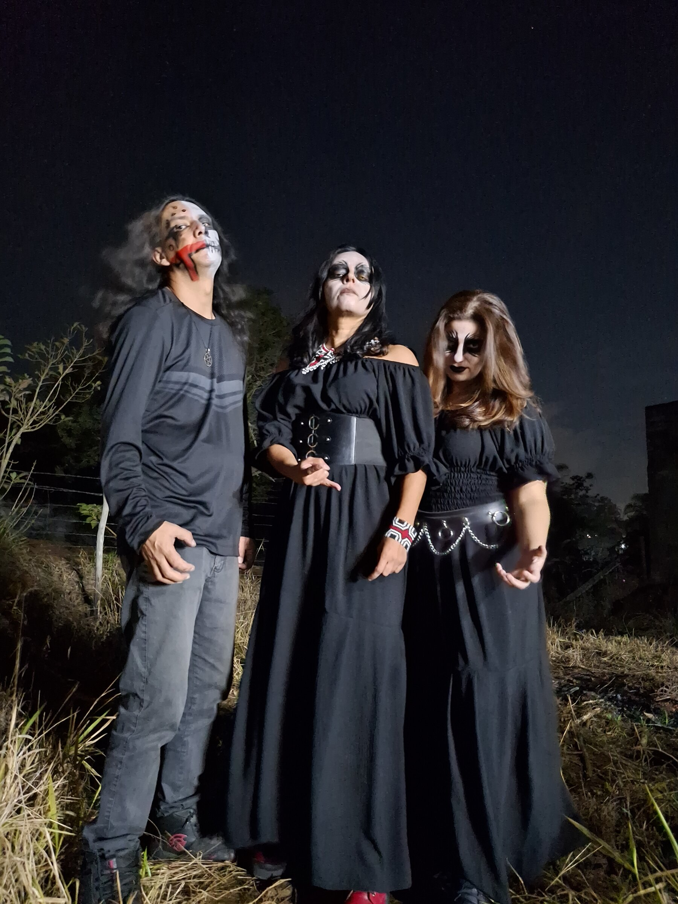
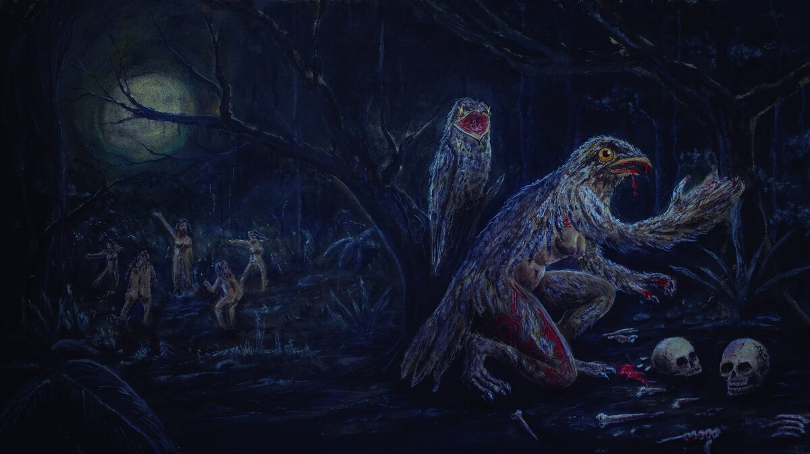

Doom Metal · São Paulo
Ürütaü nasceu em 2024 na cena underground de São Paulo, enquadrando folclore brasileiro, cosmologia tupi-guarani e lendas urbanas em forma de contos de terror e poesia.
Fundada por Ale Galliard e Lari Death, a dupla ganhou seu terceiro elemento — e seu nome — quando J. L. Índio entrou para a bateria.
Urutau é presságio de morte, lamento, mistério e conexão com o mundo espiritual — um pássaro tão enigmático que existem dezenas de versões de lendas sobre ele. É essa ambiguidade e misticismo sombrio que orienta conceitualmente banda: riffs pesados e arrastados, vocais limpos, letras inteiramente em português, e um interesse declarado em devolver ao folclore nacional o peso e a seriedade que a cultura pop reserva quase sempre a mitologias estrangeiras.
Influenciada por Candlemass, Black Sabbath, Death, Metallica, Pink Floyd e Type O Negative, entre outras, a Ürütaü já dividiu palco com grandes nomes do underground, tais como a Clenched Fist, Mortem Crucis, Mávra, Kvlto, Mortem Aetaten, Red Sun Lord, Satanatos e Arcano de Valak — e passou por entrevistas em veículos como Na Lâmina da Foice, Idea Creator Cast, Rock Doido do Argoth e Ethnos Rock.

Ürütaü — doom metal de São Paulo

Pra shows, entrevistas ou parcerias, fale direto com a banda.